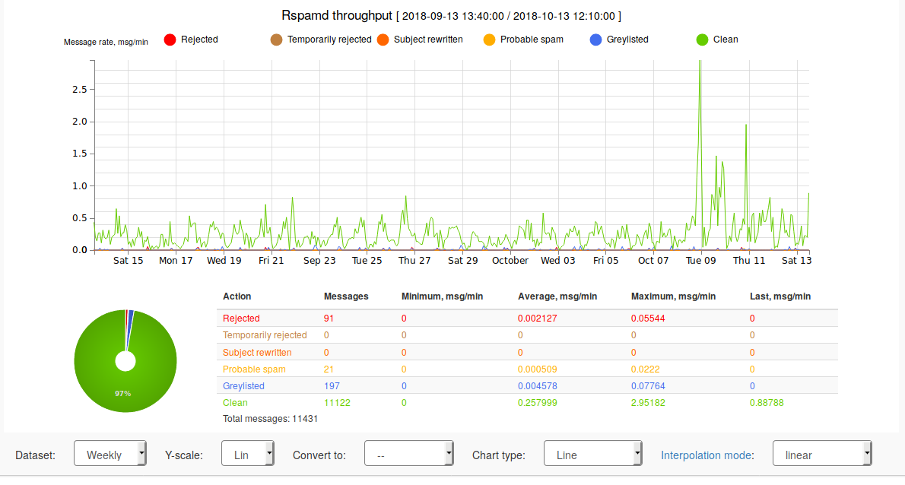

Default configuration
By default, the mail server is protected against spam with rspamd.
The web user interface is accessible from the LAN:
antispam: # Check inbound and outbound emails for virusesyaml port: 33000 # port to use for the antivirus daemon webui: # rspamd web interface active: true # Activate or not allow: # a list of IP address that can access the web interface - 192.168.0.0/16 # RFC1918 local networks - 172.16.0.0/12 - 10.0.0.0/8
A strong password is generated for the administrator account. After
the deployment, the password is stored in the deployment backup
folder, in rspamd/admin.pwd.